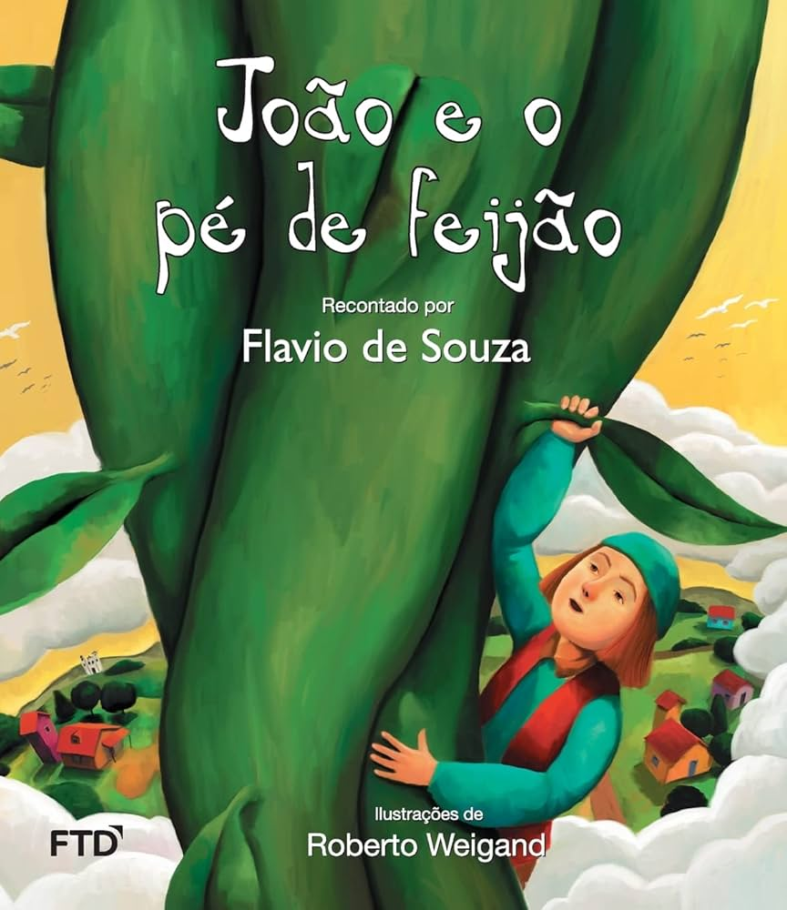

Joao e o pé de feijão
Voltar
João sobe pelo pé de feijão e encontra um castelo onde vive um gigante. Dentro do castelo, ele encontra tesouros, como uma galinha que põe ovos de ouro e uma harpa mágica. O gigante, que é muito rico, tenta pegá-lo, mas João consegue fugir levando os tesouros. Ele desce o pé de feijão, corta-o e mata o gigante.
